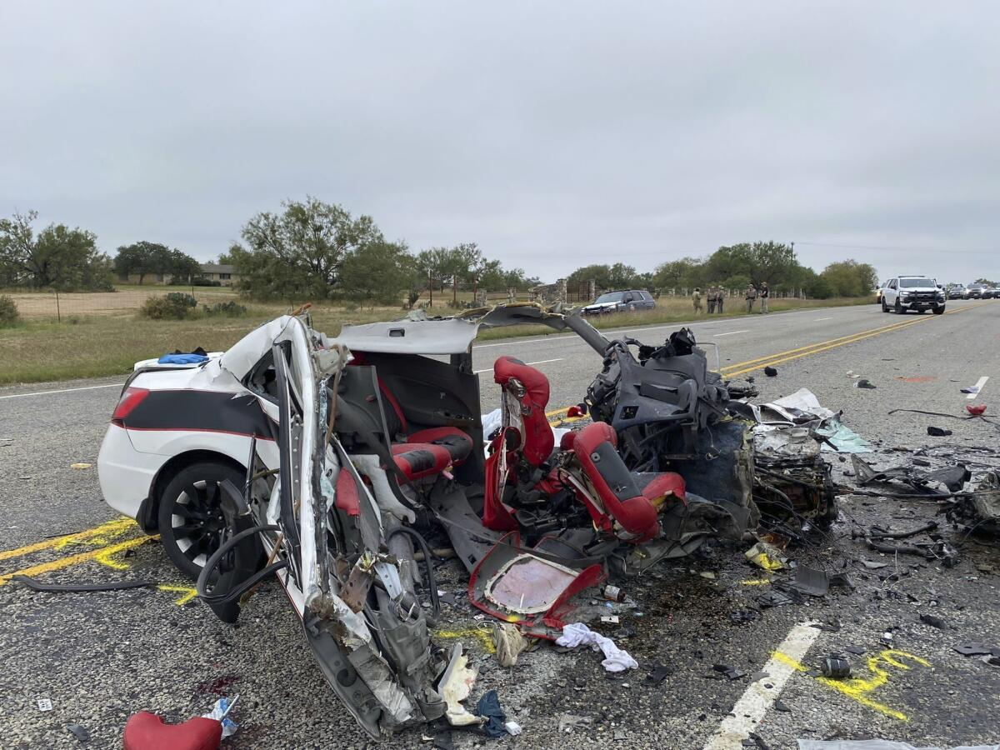
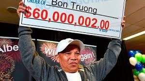

Un grave siniestro vial ocurrió ayer en la Ruta Nacional 8, cuando un vehículo particular colisionó de frente con un camión de carga. La colisión dejó como saldo tres muertos. La familia pregunto si podia ver los cuerpos.

En una inesperada sorpresa, un vecino de la ciudad de Rosario se ha convertido en millonario tras ganar el último sorteo de la Lotería Nacional. Juan Pérez, un hombre de 45 años, padre de tres hijos, no podía creer su suerte cuando se enteró que su boleto había sido el ganador del gran premio de 100 millones de pesos.